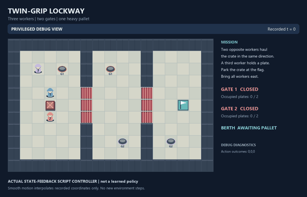
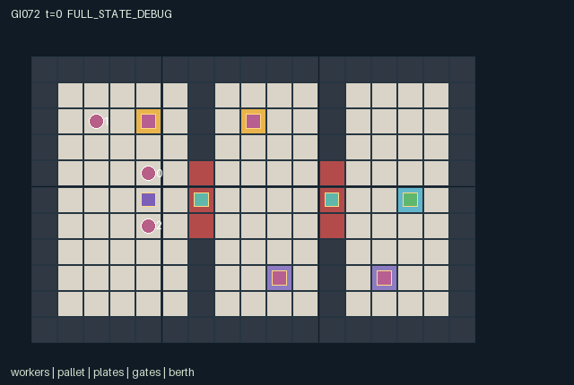

GI072 / SPATIAL
双端牵引闸门
三名角色配合牵引横梁、踩压板开闸，在实际几何约束下完成搬运与通行。
Original saved demonstration
Recorded native state, often authored scripts or interventions; information scope and failures are preserved in the original provenance. This is a saved demonstration, not live browser play.

Release verification episode
Untrained uniform legal actions. Actual JAX state sampled along the full original episode; full-state debug camera. No human performance or learning claim.

Run this game
crucibles play --game 72
Start Python locally, then open the address printed by the terminal. Installation, multiplayer, takeover and keyboard controls →
Objective, rewards & ending
Exact task contract
{
"objective": "Bring the shared pallet to [14,5] and all three workers into x>=12.",
"natural_termination": "Success requires actual pallet berth occupancy and all workers east of gate 1; no early natural failure. Natural completion precedes the 192-step limit.",
"interaction": "Two opposite-flank workers must request the same cardinal haul. Actual plate occupancy controls gate passability; occupied apertures prevent crushing. Movement and handover require real positions.",
"observation_access": "Every active entity and the complete map are public. Flattened observations contain only the declared current grid, own identity, time, and plate counts; no pending actions or diagnostic events."
}Declared per-step reward bounds: -0.005 to 1. Observability: fully_observable.
Rules
- Three workers must bring the one real pallet to its berth and all cross into the east chamber.
- Two workers on opposite flanks must choose the same HAUL direction. The two workers and pallet then translate together by one cell.
- Standing on either associated pressure plate opens a gate for the next action. Occupied apertures remain open until empty.
- Walking reads old occupancy: no swaps or following. Conflicting free-cell targets fail; accepted hauling reserves its destinations.
- Animate only changes in actual positions, plate occupancy, gate state and recorded events. An unexecuted script is never gameplay evidence.
- The map and active entities are public. Event and action-outcome annotations are debug diagnostics; the policy still receives only the declared 1876 columns.
- Natural completion precedes the 192-step limit. Already-ended raw states are absorbing and must not replay their last event as new motion.
Original mechanism document (historical status wording retained)
# game-v3-00072 — Twin-Grip Lockway source attempt 00
**状态：AUTHORED_NOT_EXECUTED。** 本包实现了实际空间内核与声明式场景，但没有导入或执行候选源码，没有导入 JAX，也没有运行验证器、rollout、训练或渲染。Python AST 解析与静态文档交叉核对不等于 validator PASS。
## 身份、来源与边界
- 对应设计 JSON：SHA256 `07e52fb31df20bad2e2863d6df72bb0543835df784dfb2837e29ad2e30ed4567`。
- 本次源码请求：SHA256 `8c6b1dae577f485086d66206cdfdd950aabcf8c9dcd285d74865acd04d2e4d0d`。
- 源码 `candidate.py`：SHA256 `338682ead446d6010c428c97ad959472aef964a88c505928d2a51bb3067efed8`。
- 作者身份：`/root/astra_game_world_designer_000`；请求配置 `gpt-6-astra / max`。实际后端 revision 与 token usage 未知，为 null。
- 只采用获准的自身设计及六文件冻结合同，v2 addendum 优先。只写本 attempt_00 的六个文件，不覆盖既有尝试，不读其他候选、测试或结果。
## 实际空间任务
三名能力相同的工人控制各自整数位置，在 17×11 地图中把一个重货台搬到 (14,5)，并让所有工人进入 x≥12 的东区。两道竖墙只在 y=4、5、6 留三格闸口。门分别位于 x=6 与 x=11，门两侧的压力板由实体位置控制。
工人有等待、四向走动、四向牵引，共 9 个动作。一次有效牵引需要两人站在货台相对于牵引方向的正负垂直侧，并同步选择同向 HAUL。货台和两人平移同一格。第三人可以站压力板开门；跨门后，团队通常需要由远侧同伴接管压力板，让原开门者过门，再重组牵引站位。
这是原设计中的真实空间因果关系。位置直接进入碰撞、牵引站位、开门和完成条件；不是为了显示而附上的坐标。
## 源码中的字面证据
以下行号对应本包未执行源码的确切字节版本：
- `candidate.py:50`：`pallet_x = jax.random.randint(keys[0], (), 2, 5, dtype=jnp.int32)`，保留 x∈{2,3,4} 的均匀初态随机化。
- `candidate.py:54`：`agent_pos = starts[jax.random.permutation(keys[1], 3)]`，保留三名工人身份的随机置换。
- `candidate.py:111` 的 `haul_geometry` 通过实际两侧坐标匹配确定成对工人，再检查三件实体的移动目标。
- `candidate.py:186`：`accepted_directions = geometry & agreeing`，将空间可行性与两人同向动作同时作为牵引条件。
- `candidate.py:205` 提交实际工人位置；随后更新实际货台位置。
- `candidate.py:30`：`s["gate_open"] = requested | aperture_occupied`，由新位置上的压力板请求或闸口真实占位决定下一状态的开门状态。
- `candidate.py:136` 的 `observe` 返回 1876 维实际观察；`candidate.py:160` 的 `legal_actions` 返回 3×9 掩码。
- `candidate.py:218` 使用真实货台位置和三名工人的东区位置判断自然成功。
- `candidate.py:223`：`reward = jnp.array(-0.005, dtype=jnp.float32) + success.astype(jnp.float32)`，保留原奖励。
- `candidate.py:170` 的 `absorb` 保留终态与时钟；`candidate.py:230` 明确在吸收与正常转换之间选择。
## 逐步时序与动作冲突
动作读取旧闸门、旧占位和旧位置。先识别并保留唯一有效共同牵引的三个目标格，再判断普通走动。普通走动不能交换位置、进入本步刚腾出的旧占位，或进入保留的牵引目标；多个工人争同一目标时全部失败。未配对、被墙或闭门阻挡的牵引不会移动任何实体。
所有被接受的移动共同提交后，才重算压力板、闸口占位和开关。踏上压力板打开的门在下一动作中可通行。本步开始时关闭的门不会被后来开门“追认”为可穿越。闸口还有实体时，安全保持机构阻止关门穿过实体。
非法动作 ID 被转换为 WAIT 并记录 `event_invalid_action`。合法掩码中的 HAUL 表示几何上可共同执行，不预测同伴是否会选择同向动作。因此掩码允许而没有成功配对的 HAUL 可以产生拒绝事件。
## 信息、奖励与结束
所有地图和活动实体公开。观察为 [11,17,10] 行优先符号网格，再接自己的 3 维 one-hot 身份和 3 维标量；合计 1876。网格按顺序编码墙、开门、闭门、两类压力板、货台、泊位、三个工人。标量为 t/192 与两扇门各自占板数/2。策略不接收未来动作、debug 事件或 reset key。
每个实际未结束转换给每人 -0.005；自然成功时同时加 1。没有距离奖励、开门刷分或个人搬运奖励。货台到泊位且所有工人在东区时自然终止；其他停滞仅在 192 步截断，不被宣称不可解。
接口明确声明 `terminal_policy="absorbing_raw_state_natural_priority_v1"`，`episode_done_path=["done"]`。非终态输入仅增加一次 t；已终止或截断的输入保持所有状态与观察、返回零奖励与全体 done。自然完成与时间上限同一步发生时，terminated 优先，truncated=false。raw_step 不执行 autoreset。
## 固定状态与必要表示适配
manifest 声明 36 个状态叶，均为固定形状的 int32 或 bool；未通过实际 JAX tracing 检验这些形状。所做适配如下：
1. 设计中的 int8/int16 字段无损拓宽为 int32，布尔语义不变。
2. uint32 reset key 不放进边界状态；实际传入 key 仍用于原初态抽样，轨迹来源须由可信执行器保存。
3. 单货台位置、上一货台位置与泊位位置由 [2] 表示为 [1,2]，单货台 active 由标量表示为 [1]，以满足实体合同。内部从第 0 行读取真实单体坐标。
4. 增加明确的 scalar bool `done` 作为联合吸收标志，并保留 terminated/truncated 原因。
5. 增加实际派生的 tile_map、闸门中心、静态实体 active、全体玩家可见性、每门占板数及货台是否到泊位。闸门中心表示同一扇三格门的实际中心，完整闸口仍由 gate_id 与 tile_map 表达。
6. 上述显示绑定不改变动作、观察数量、重置分布、奖励或完成条件；没有压缩为旧 A2/O16/U5/H32 接口。
## 场景与真实事件
scene.json 绑定实际源码和 manifest 哈希。墙、开闭闸口、压力板和泊位绑定 tile_map；工人、货台、压力板、闸门和泊位均绑定真实位置、active 与 [3,count] 可见性。工人移动、货台牵引和开关事件来自源码明确更新的字段。压力板计数及货台到位标志都是实际状态派生量。
事件与动作结果注释属于 debug 诊断，不构成策略额外输入。渲染器需要按 t 去重；吸收调用保留最后事件，不代表又发生一遍动作。本文和 playthrough 中的期望操作不能作为画面回放证据。尚未生成 RGB 帧或动画，视觉绑定正确性仍待可信执行阶段核验。
## 声明的不变量与局限
预期不变量包括：活动实体不在墙或闭门中；工人互不重叠且不与货台重叠；货台只在两名正确站位工人同步牵引时移动；货台和这两人位移相同；开门状态等于实际压力板请求或闸口占位；所有数量与容量固定；终止与截断互斥；已结束状态吸收。manifest 的可表达基础不变量仅声明活动位置唯一和有关非负量，其他机制不变量在此完整保留，等待实际工程检查。
playthrough.json 提供 37 行固定动作的**未执行条件性假说**。它显式要求规范初态和身份排列，并不声称 seed=0 会抽到这些条件；条件不满足应记录脚本前置条件未满足，不能覆盖 reset 或虚构成功。其目标是展示完整接管和搬运路径，不是最优策略证明。
未知事项包括实际 JAX 执行与 eager/JIT/vmap 一致性、场景表现、可学习性、192 步是否合适、占位保持机制引发的替代策略，以及经验对学习规则迁移的作用。没有观察到测试分数、成功回合或学习收益。本次为该候选一个源码尝试，未进行修复；两个设计总共仍是两项游戏提案。
Commands
Roles & abilities
agent_0 Interchangeable worker: walk, jointly haul, or hold a pressure plate.
agent_1 Interchangeable worker: walk, jointly haul, or hold a pressure plate.
agent_2 Interchangeable worker: walk, jointly haul, or hold a pressure plate.
Observation permissions
Training receives only the original observation rows. Role cameras use declared visibility; debug cameras are explicitly marked. Local benchmark records log debug exposure and role takeover history.
Exact observation layout
[
{
"slice": [
0,
1870
],
"meaning": "Row-major [11,17,10] public grid. Channels: static wall; open gate; closed gate; gate-0 plate; gate-1 plate; pallet; berth; agent 0; agent 1; agent 2.",
"visibility": "public"
},
{
"slice": [
1870,
1873
],
"meaning": "Observer's one-hot identity.",
"visibility": "self"
},
{
"slice": [
1873,
1874
],
"meaning": "Public completed-step clock t/192.",
"visibility": "public"
},
{
"slice": [
1874,
1876
],
"meaning": "Actual occupied plate counts for gates 0 and 1, each divided by two.",
"visibility": "public"
}
]Entity visibility & attributes
[
{
"id": "workers",
"kind": "agent",
"count": 3,
"position": [
"agent_pos"
],
"active": [
"agent_active"
],
"visibility": [
"agent_visibility"
],
"attributes": [
{
"state_path": [
"event_agent_outcome"
],
"meaning": "Latest actual wait/step/haul/rejection outcome code.",
"display": "category"
},
{
"state_path": [
"event_haul_agents"
],
"meaning": "Worker participated in the latest accepted joint haul.",
"display": "flag"
}
]
},
{
"id": "pallet",
"kind": "object",
"count": 1,
"position": [
"pallet_pos"
],
"active": [
"pallet_active"
],
"visibility": [
"pallet_visibility"
],
"attributes": [
{
"state_path": [
"pallet_on_berth"
],
"meaning": "Pallet currently occupies its actual berth.",
"display": "flag"
}
]
},
{
"id": "plates",
"kind": "landmark",
"count": 4,
"position": [
"plate_pos"
],
"active": [
"plate_active"
],
"visibility": [
"plate_visibility"
],
"attributes": [
{
"state_path": [
"plate_gate"
],
"meaning": "Associated gate index.",
"display": "category"
},
{
"state_path": [
"plate_occupied"
],
"meaning": "A worker currently stands on this plate.",
"display": "flag"
}
]
},
{
"id": "gates",
"kind": "gate",
"count": 2,
"position": [
"gate_pos"
],
"active": [
"gate_active"
],
"visibility": [
"gate_visibility"
],
"attributes": [
{
"state_path": [
"gate_open"
],
"meaning": "Actual next-step passability for all three aperture cells.",
"display": "flag"
},
{
"state_path": [
"gate_requested_open"
],
"meaning": "At least one associated plate is occupied.",
"display": "flag"
},
{
"state_path": [
"gate_plate_count"
],
"meaning": "Number of occupied associated plates.",
"display": "number"
}
]
},
{
"id": "berth",
"kind": "landmark",
"count": 1,
"position": [
"berth_pos"
],
"active": [
"berth_active"
],
"visibility": [
"berth_visibility"
],
"attributes": []
}
]Actual verification & provenance
Per-game execution receipt
{
"game": "gi072",
"status": "PASS",
"verification_revision": 2,
"source_sha256": "338682ead446d6010c428c97ad959472aef964a88c505928d2a51bb3067efed8",
"seed": 20261101,
"runtime": {
"jax": "0.4.38",
"numpy": "1.26.4",
"devices": [
"TFRT_CPU_0"
]
},
"dimensions": {
"num_agents": 3,
"observation_size": 1876,
"num_actions": 9,
"max_steps": 192
},
"checks": {
"eager_reset": {
"status": "PASS",
"seconds": 3.266551971435547
},
"observation_spaces_legal_masks": {
"status": "PASS",
"seconds": 1.7640855312347412
},
"eager_step": {
"status": "PASS",
"seconds": 0.9082558155059814
},
"jit_reset": {
"status": "PASS",
"seconds": 0.7330598831176758
},
"jit_step": {
"status": "PASS",
"seconds": 0.5295326709747314
},
"eager_jit_integer_parity_float_measurement": {
"status": "PASS",
"seconds": 0.001056671142578125
},
"jit_vmap_reset": {
"status": "PASS",
"seconds": 0.6092894077301025
},
"jit_vmap_step": {
"status": "PASS",
"seconds": 1.0915305614471436
},
"outer_autoreset_api": {
"status": "PASS",
"seconds": 1.6652898788452148
},
"full_original_horizon_episode_and_render": {
"status": "PASS",
"seconds": 1.1656029224395752
}
},
"human_scores": null,
"browser_controls": "PENDING",
"failures": [],
"elapsed_seconds": 12.154844999313354,
"float_parity_max_abs": 0.0,
"numerical_parity": "EXACT",
"raw_terminal_absorbing": "PASS",
"terminal_outer_reset": "PASS",
"episode_steps": 192,
"scripted_random_returns": [
-0.9599999785423279,
-0.9599999785423279,
-0.9599999785423279
],
"terminal": true,
"demo_information": "FULL_STATE_DEBUG",
"demo_frames": 25,
"render_roles_checked": 3
}Chromium control verification
{
"game": "gi072",
"status": "PASS",
"human_scores": null,
"engineering": true,
"checks": [
"catalog_selected_and_real_native_reset",
"keyboard_native_direction_command",
"dom_queue_and_native_step",
"second_participant_ownership_and_native_joint_step",
"all_roles_individually_controllable_no_role_cap",
"explicit_debug_camera",
"release_to_pure_ai_without_reset",
"close_session_preserves_log"
],
"ui_sha256": "96243f9de144b80b5e20a114330e2206bdcd58d3efc9c6f13bbc08b95cacc14d",
"keyboard_action_id": 1,
"seconds": 6.591578722000122
}Original identity and file hashes
{
"id": 72,
"key": "gi072",
"title": "双端牵引闸门",
"summary": "三名角色配合牵引横梁、踩压板开闸，在实际几何约束下完成搬运与通行。",
"tags": [
"协同搬运",
"机关通行"
],
"family": "spatial",
"dimensions": {
"num_agents": 3,
"observation_size": 1876,
"num_actions": 9,
"max_steps": 192
},
"source_sha256": "338682ead446d6010c428c97ad959472aef964a88c505928d2a51bb3067efed8",
"manifest_sha256": "033bada94309feb1cced5db9d31904a1145c7c1c2a8e4b9e455e13c2b935af64",
"files": [
{
"file": "candidate.py",
"sha256": "338682ead446d6010c428c97ad959472aef964a88c505928d2a51bb3067efed8",
"bytes": 12579,
"origin": "work/exp_2/game_incubator_v3/community_games222_225_visualization_root222_v1/native154_candidate/registry/v2/games/game-v3-00072/candidate.py"
},
{
"file": "manifest.json",
"sha256": "033bada94309feb1cced5db9d31904a1145c7c1c2a8e4b9e455e13c2b935af64",
"bytes": 16019,
"origin": "work/exp_2/game_incubator_v3/community_games222_225_visualization_root222_v1/native154_candidate/registry/v2/games/game-v3-00072/manifest.json"
},
{
"file": "scene.json",
"sha256": "6698b27cb0df0270204f4df0e7fa34bb1d63131a486908c0faa90b41fa656259",
"bytes": 7170,
"origin": "work/exp_2/game_incubator_v3/community_games222_225_visualization_root222_v1/native154_candidate/registry/v2/games/game-v3-00072/scene.json"
},
{
"file": "mechanism.md",
"sha256": "5f558bef475b8fa38b9804ab521dd5f4607b58fe3cb62e2aea984a107838a3c7",
"bytes": 8076,
"origin": "work/exp_2/game_incubator_v3/sources/game-v3-00072/attempt_00/mechanism.md"
},
{
"file": "playthrough.json",
"sha256": "d4ee264f49f06f56c82d3d8af6303834ba772187ef83223bfc96563850d5641b",
"bytes": 4338,
"origin": "work/exp_2/game_incubator_v3/sources/game-v3-00072/attempt_00/playthrough.json"
}
],
"original_status": "NATIVE154_REFERENCE",
"original_saved_replay": true,
"release_validation": "PASS",
"human_scores": null,
"browser_validation": "PASS"
}